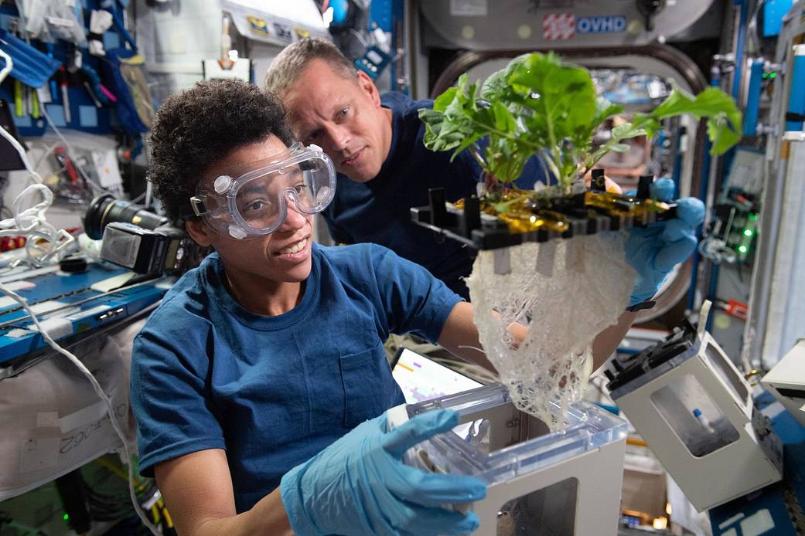
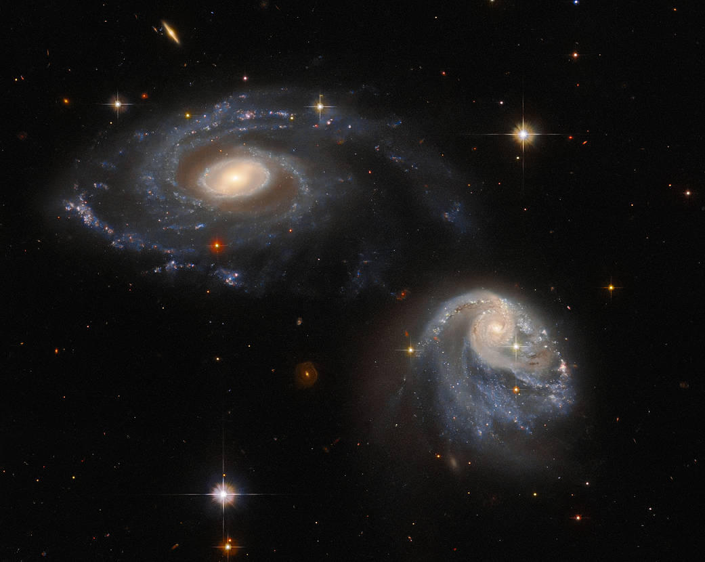
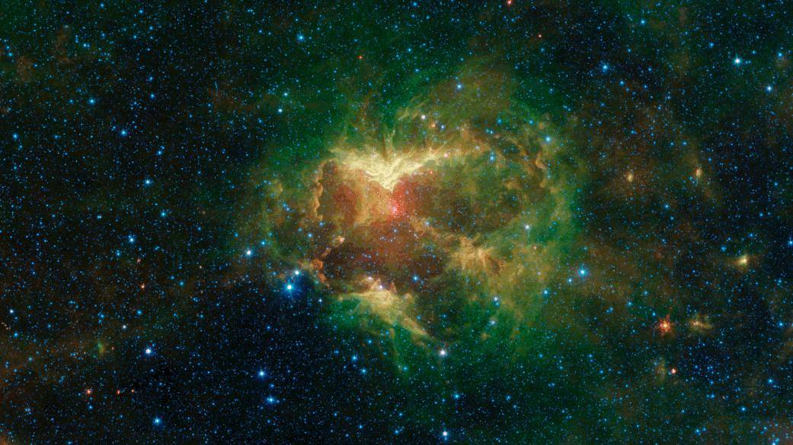

Two NASA astronauts Jessica Watkins and Bob Hines testing soilless
methods of farming.
This could potentially help exploring and improving Earth's agriculture
and better secure food for people on Earth

Astronauts Study Argiculture in Space
In the image is a pair of galaxies named Arp-Madore 608-333 interacting
each other.
Even though they seem to be indiviual, they are, according to NASA,
"subtly warping one another through a mutual gravitational interaction
that is disrupting and distorting both galaxies."

Two Galaxies Interacting
There was a green cloud of gas and dust in the outer area of the Milky
Way galaxy.
This was supposedly created by the radiation and particles from an
O-type star that is 20 times heavier than the Sun.

Outerspace Gas and Dust Covering the Milky Way